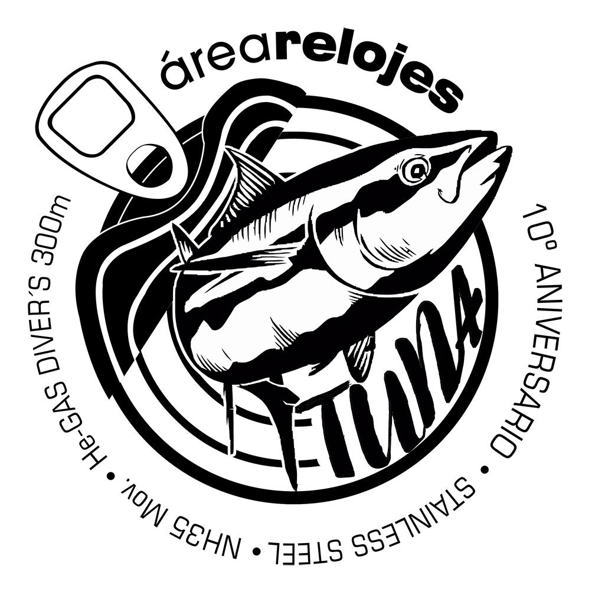
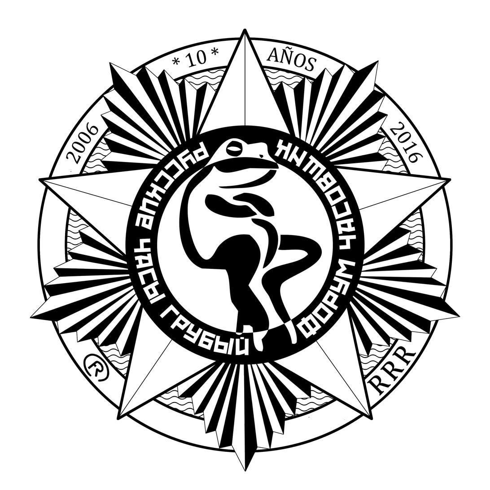
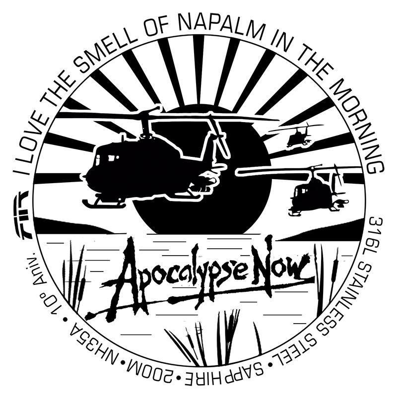
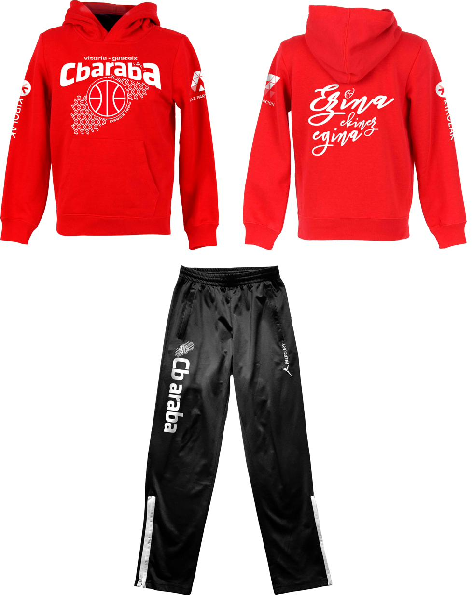
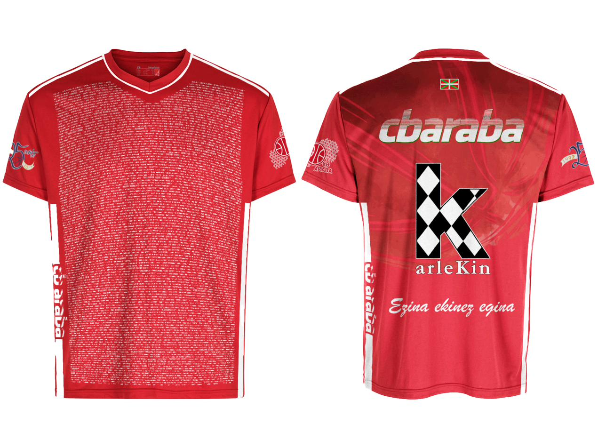
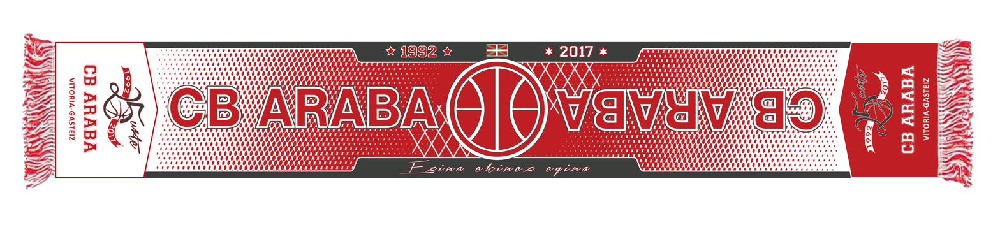
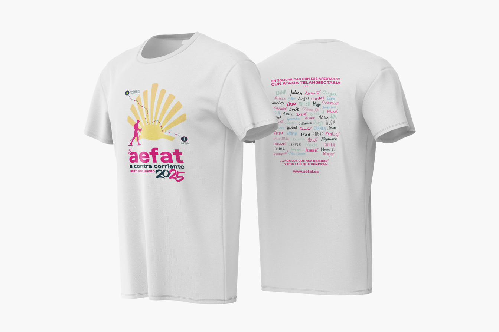

06 / Personalización de Producto
Personalización de producto
Personalización de producto
y diseño de equipaciones
Diseñar un producto físico es distinto a diseñar una comunicación visual. La imagen de un cartel puede corregirse; un grabado en acero inoxidable, no. Eso exige un nivel de precisión y de previsualización previo al que no todo diseñador está acostumbrado.

Diseños de caseback para foros internacionales de relojería
Ediciones especiales para comunidades de coleccionistas
Diseño de grabados para traseras de relojes de base Seiko para ediciones especiales de foros de relojería. Proyectos de edición limitada para comunidades de coleccionistas, tanto nacionales como internacionales, con motivo de aniversarios del foro.



Equipaciones y merchandising
CB Araba — Equipaciones deportivas y artículos conmemorativos




¿Quieres verlo todo junto? El portfolio completo en un único documento.
¿Necesitas diseño
de producto?
Equipaciones, merchandising o diseño de producto. Cuéntame el proyecto.
Solicitar presupuesto